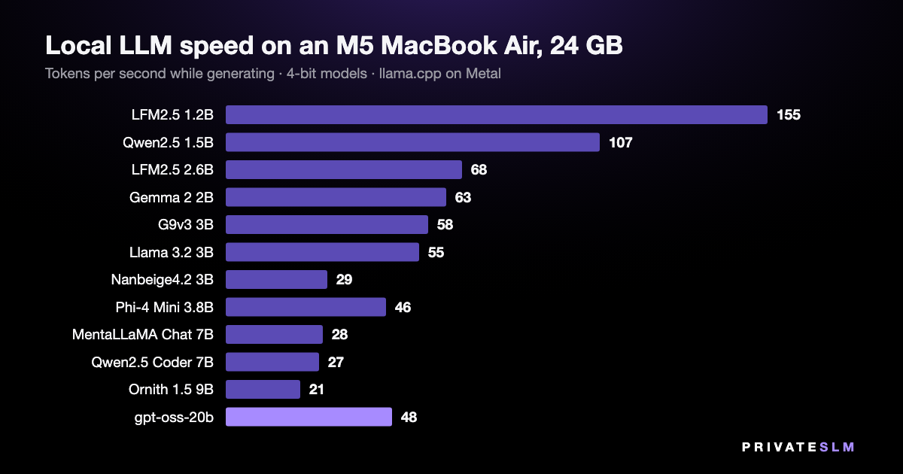
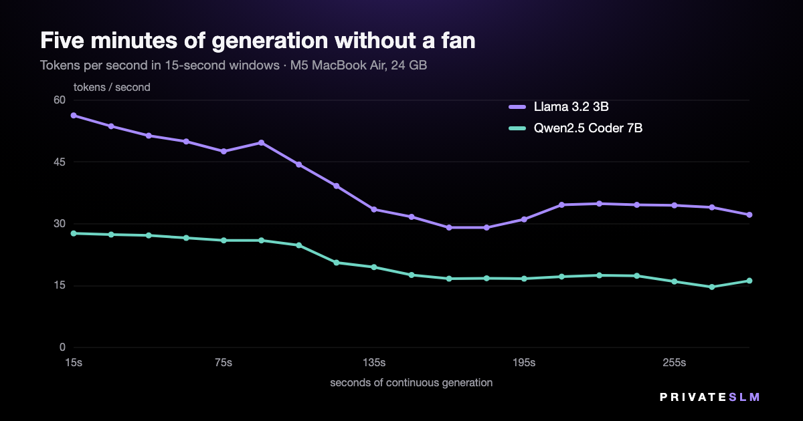

Local LLM speed on an M5 MacBook Air: 12 models measured
How fast is a local model on an ordinary Mac — not a Mac Studio with 128 GB, the laptop people actually buy? We took a MacBook Air with an M5 chip and 24 GB of memory, the fanless one, and measured 12 models on it: from a 1.2-billion-parameter model that fits in 0.7 GB to a 20-billion-parameter one that needs 11.6 GB. Same engine, same settings, every model measured in at least three separate passes.
The short version: the small models write far faster than anyone reads, the 7–9B models write 21–28 tokens a second, and the biggest model in the test is faster than the 7B ones. The less pleasant finding is at the end: without a fan, a long generation loses about 41% of its speed after two minutes.

The numbers
| Model | Parameters | File | Generation, tokens/s | Prompt, tokens/s |
|---|---|---|---|---|
| LFM2.5 1.2B | 1.2B | 0.73 GB | 155 ± 1.1 | 3,930 |
| Qwen2.5 1.5B | 1.5B | 0.98 GB | 107 ± 2.4 | 3,050 |
| LFM2.5 2.6B | 2.7B | 1.68 GB | 68 ± 1.6 | 1,650 |
| Gemma 2 2B | 2.6B | 1.70 GB | 63 ± 2.1 | 1,980 |
| G9v3 3B | 3.0B | 1.90 GB | 58 ± 0.9 | 1,570 |
| Llama 3.2 3B | 3.2B | 2.01 GB | 55 ± 0.6 | 1,480 |
| Nanbeige4.2 3B | 4.2B | 2.44 GB | 29 ± 0.4 | 660 |
| Phi-4 Mini 3.8B | 3.8B | 2.48 GB | 46 ± 0.3 | 1,280 |
| MentaLLaMA Chat 7B | 6.7B | 4.08 GB | 28 ± 0.2 | 648 |
| Qwen2.5 Coder 7B | 7.6B | 4.68 GB | 27 ± 0.2 | 589 |
| Ornith 1.5 9B | 9.2B | 5.77 GB | 21 ± 0.3 | 522 |
| gpt-oss-20b | 20.9B | 11.61 GB | 48 ± 0.3 | 807 |
MacBook Air (M5, 10-core GPU, 24 GB), macOS 26.5, on mains power. 4-bit files: Q4_K_M, except Nanbeige4.2 (IQ4_XS). Generation is 256 tokens after a 512-token prompt in a 4,096-token context; each figure is the mean of five repetitions in the fastest pass, ± the standard deviation within it. Prompt speed is rounded to the nearest ten above 1,000.
What those speeds feel like
A token is roughly three quarters of an English word, and an attentive reader gets through four or five words a second — six or seven tokens. So everything in this table generates faster than you read it. The gap between 55 and 155 tokens a second only matters when you are not reading along: a summary you will skim, a page being rewritten, a batch of files.
The prompt column is the wait before the first word. A 3,000-token document — four or five pages — takes about 5 seconds to read at 648 tokens a second (MentaLLaMA Chat 7B) and under 3 seconds at 1,480 (Llama 3.2 3B).
The 20B model that outruns the 7B ones
gpt-oss-20b has 20.9 billion parameters and generated 48 tokens a second. The two 7B models managed 27 and 28. That is not a measurement error: gpt-oss-20b is a mixture-of-experts model, and its file says how — 32 experts in each layer, 4 of them used for any one token (the expert_count and expert_used_count fields in the GGUF header). All 20.9 billion parameters have to sit in memory, 11.6 GB of it, but only a fraction is read for each token.
Speed follows the parameters a model touches; memory follows the parameters it stores. This is the class of model a 24 GB Mac buys you over a 16 GB one — the memory arithmetic is here.
Below 4B, size does not predict speed
Llama 3.2 3B (3.2B) ran at 55 tokens a second, G9v3 3B at 58, Phi-4 Mini 3.8B at 46. Nanbeige4.2 3B — 4.2B parameters despite the name — ran at 29, close to the speed of a 7B. If you choose a small model for its speed, the parameter count on the label is a poor guide; measure the one you mean to use.
Two minutes without a fan
Everything above is a short burst — the length of a chat reply. The MacBook Air has no fan, so we also let two models generate continuously for five minutes.

| Model | First 15 s | Slowest 15 s | Last minute | Kept |
|---|---|---|---|---|
| Llama 3.2 3B | 56.3 | 29.1 | 33.8 | 60% |
| Qwen2.5 Coder 7B | 27.7 | 14.7 | 16.1 | 58% |
Tokens per second in 15-second windows. The context is emptied each time it fills (4,096 tokens); the time that takes is not counted.
Both models hold their speed for about a minute and a half and then slide to roughly 59% of where they started. Part of the early decline is the context filling up, which makes every token a little more expensive; the part that does not come back when the context is emptied is heat.
In practice: a chat reply is over long before this matters. Long jobs — summarising a book chapter by chapter, translating a folder of files — run at the lower rate. A Mac with a fan should hold its speed, but we have not measured one and will not put a number on it. Phones behave the same way: a sustained-load study we covered earlier found an iPhone 16 Pro losing 44% of its throughput.
How we measured
- Machine. MacBook Air, Apple M5 (10-core CPU, 10-core GPU), 24 GB, macOS 26.5, plugged in, Low Power Mode off. An ordinary desktop session with other apps open, not a clean boot.
- Engine. llama.cpp build b10488 — the build privateSLM 2.3 ships — with every layer on Metal.
- One run. Load the model, warm it up, then five times: empty the context, read a 512-token English prompt in one batch, generate 256 tokens one at a time. Context of 4,096 tokens, the app's default.
- Passes. Every model was measured at least three times: in a pass from the smallest model to the largest with 75 seconds between models, in a second pass in the reverse order, and once more after three minutes of rest. We report the fastest pass, because everything that disturbs a run — a background process, a warm chassis — makes it slower. All passes are below and in the raw data.
- What the passes show. Rest matters even for short bursts on a fanless machine: the smallest model generated 139 tokens a second 75 seconds after the previous model and 155 after three minutes of rest. Ornith's third pass ran while we were using the laptop ourselves, so it got a fourth.
- Discarded. Runs made after the laptop was unplugged and had gone to sleep. On battery this Mac switches to Low Power Mode, and those numbers are not comparable with the rest.
- Not measured. Answer quality. A 1.2B model that writes 155 tokens a second writes worse text than a 9B at 21; this page is about speed only. Nor other quantizations, other Macs, or battery power.
| Generation, tokens/s | Pass 1 | Pass 2 | Pass 3, rested | Pass 4, rested |
|---|---|---|---|---|
| LFM2.5 1.2B | 129.5 | 138.9 | 155.1 | — |
| Qwen2.5 1.5B | 90.1 | 99.9 | 107.0 | — |
| LFM2.5 2.6B | 60.4 | 63.1 | 67.6 | — |
| Gemma 2 2B | 54.6 | 63.1 | 63.1 | — |
| G9v3 3B | 43.3 | 54.4 | 57.9 | — |
| Llama 3.2 3B | 52.0 | 51.3 | 55.3 | — |
| Nanbeige4.2 3B | 29.1 | 27.9 | 28.3 | — |
| Phi-4 Mini 3.8B | 45.5 | 44.4 | 45.8 | — |
| MentaLLaMA Chat 7B | 27.6 | 27.1 | 27.7 | — |
| Qwen2.5 Coder 7B | 26.8 | 19.1 | 25.1 | — |
| Ornith 1.5 9B | 20.9 | 20.0 | 17.6 | 21.4 |
| gpt-oss-20b | 45.4 | 47.5 | 45.9 | — |
The code and data are public: bench.c, run_all.sh and the raw results.jsonl (55 runs).
Run them yourself
Eight of these models are free in privateSLM, which is itself free: open Models, pick one, and it downloads once and runs offline from then on. Two more are in the expert packs; Ornith 1.5 9B and gpt-oss-20b are not in the catalog. The catalog states the memory each one needs before you download it. On Macs and iPhones with Apple Intelligence there is also the built-in model, with nothing to download at all.
Related: how much RAM a local model needs on a Mac, and which Mac mini to buy for local AI.
For business · MegaBrain Private AI for your business privateSLM is private AI for one person on one device. For a team or a company there is MegaBrain — a separate product from the same team. Visit MegaBrain →